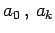

Inhalt Index DeskTop Bronstein

 Numerische Mathematik Approximation, Ausgleichsrechnung, Harmonische Analyse
Numerische Mathematik Approximation, Ausgleichsrechnung, Harmonische Analyse


Eine formelmäßig oder empirisch gegebene periodische Funktion f(x) mit der Periode  ist durch ein trigonometrisches Polynom oder eine FOURIER-Summe der Form
ist durch ein trigonometrisches Polynom oder eine FOURIER-Summe der Form
wobei die Koeffizienten  und bk reell sein sollen, zu approximieren. Die Bestimmung der Ansatzkoeffizienten ist Gegenstand der harmonischen Analyse.